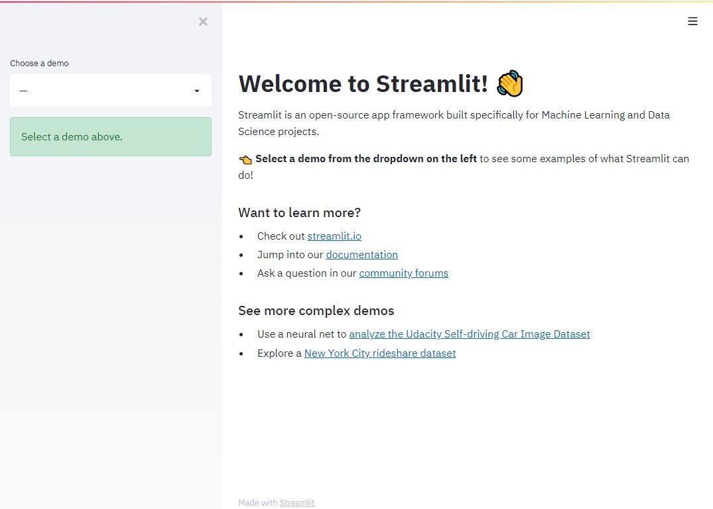

Streamlit配合Nginx搭建在线OCR识别网站
streamlit是一个用于构建机器学习、数据可视化的python框架。对于需要快速部署机器学习应用，或在网上展示一些小应用，又不想学习flask或django等的，streamlit简直是黑暗曙光。只需要 一些基本的pthon的知识（如果这个都没有，那就不用往下看了），结合 streamlit 的示例，开发一个webapp可以说是十分迅速。本文主要记录了app上线过程中的端口转发和后台运行问题，至于编写streamlit应用的方法，请自行学习。
1.服务器环境介绍
- Debian 10
- DNS域名解析到服务器IP的80端口
- Python3.8
- Nginx1.14.2
- 服务器（包括VPS控制台）的防火墙确保80端口开通
2. 安装streamlit
pip install streamlit
安装之后在命令行输入测试（请先放行8501端口），注意：要在python环境中运行:
streamlit hello
如果能看到，下面的页面则说明运行正常。 
此时，python搭建一个app环境，上传你的appname.py文件。
在浏览器输入例如：http://35.167.158.251:8501测试看是否能正常运行：
注意：如果你的app引用了其他三方模块，请记得在服务器上安装它们。
streamlit run appname.py
3. Nginx的简单配置
修改 /etc/nginx/sites-available/default文件
server {
listen 80 default_server;
listen [::]:80 default_server;
root /var/www/html;
index index.html index.htm index.nginx-debian.html;
server_name _;
location / {
# First attempt to serve request as file, then
# as directory, then fall back to displaying a 404.
#try_files $uri $uri/ =404;
# new add
#proxy_set_header Host $http_host;
#proxy_set_header X-Real-IP $remote_addr;
#proxy_set_header X-Forwarded-For $proxy_add_x_forwarded_for;
#proxy_set_header X-Scheme $scheme;
proxy_pass http://127.0.0.1:8501;
}
location ^~ /static {
proxy_pass http://127.0.0.1:8501/static/;
}
location ^~ /healthz {
proxy_pass http://127.0.0.1:8501/healthz;
}
location ^~ /vendor {
proxy_pass http://127.0.0.1:8501/vendor;
}
location /stream { # most important config
proxy_pass http://127.0.0.1:8501/stream;
proxy_http_version 1.1;
proxy_set_header X-Forwarded-For $proxy_add_x_forwarded_for;
proxy_set_header Host $host;
proxy_set_header Upgrade $http_upgrade;
proxy_set_header Connection "upgrade";
proxy_read_timeout 86400;
}
}
4. 修改streamlit的配置文件
使用命令streamlit config show > ~/.streamlit/config.toml建立配置文件。
然后修改其中的：
serverAddress = "your domain name" # 你的域名
enableCORS = false
5. 配置后台运行
先启动Nginx，systemctl start nginx。
# 安装tmux
apt install tmux
# 新建会话
tmux new -s StreamSession
# 在窗口中输入命令
streamlit run appname.py
或者
/root/my_app/my_app_venv/bin/python3.8 /root/my_app/my_app_venv/bin/streamlit run /root/my_app/my_app_venv/appname.py
然后，Ctrl+B and then D (Don’t press Ctrl when pressing D)可以关闭窗口了。
# 分离会话
tmux attach -t StreamSession
# 查看会话
ps aux | grep streamlit
# 通过pid中断会话
kill -9 20947
6. streamlit优缺点
streamlit的优点很明显：
- 开发速度快，修改方便。非常适合个人开发者。
- 不必需要web方面知识也可以开发出可用的web app，这也是最吸引人的地方。
streamlit也有一些缺点：
- 前端界面固定，开发者不能随意调整控件位置。
- 社区现在还不够完善，也有一些bug暂时没有解决。
总的来说，streamlit绝对是一款值得学习的框架；也许你的领域并不是机器学习、数据分析领域，但是从另一个方面想，streamlit提供了丰富的控件以及简单的开发流程，完全可以使用。
Read other posts